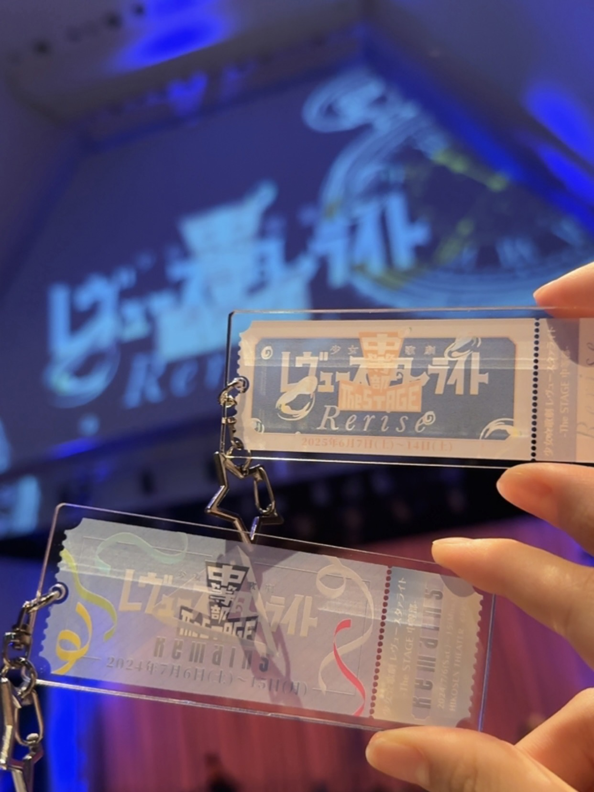
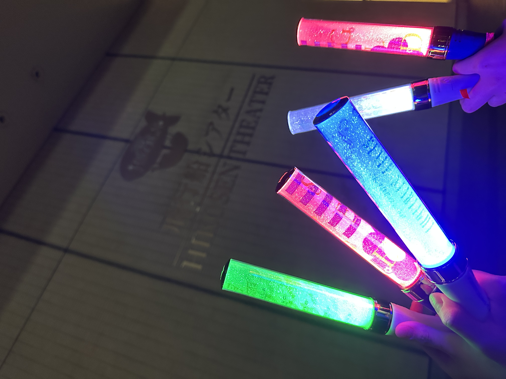
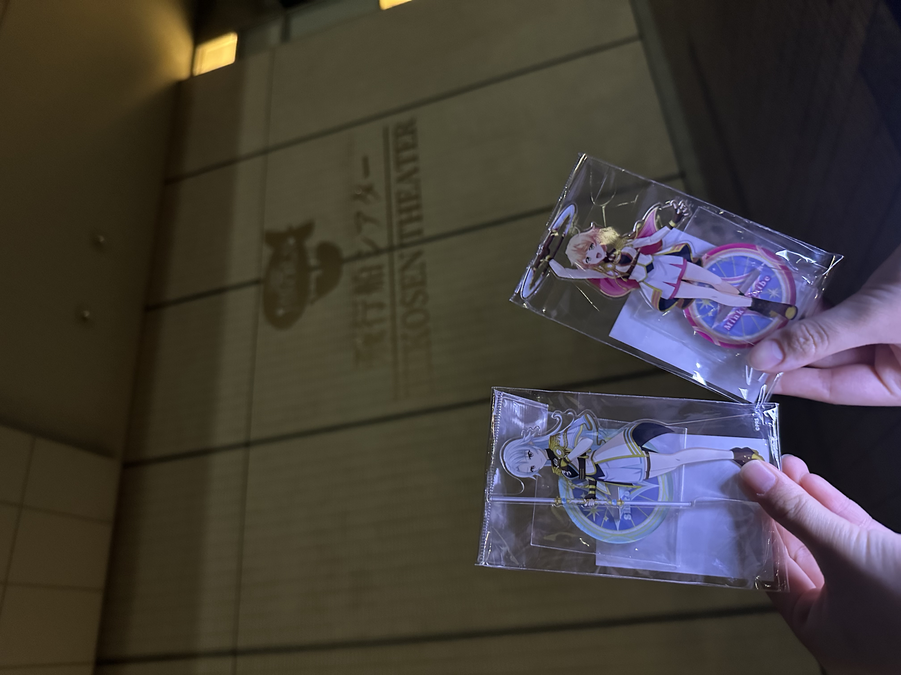

2025/06/13 少女☆歌劇 レヴュースタァライト -The STAGE 中等部- Rerise
2025/06/13 Revue Starlight -The STAGE Siegfeld Institute of Music Junior High- Rerise



Reriseを観に行った。
ロマーナもシークフェルトも超絶格好良かった。
特に、詩呂ちゃんとステラちゃんの礼式のレヴューで、2人の関係性が主人と従者から友人に変わったところでボロ泣きした。
あと、みんなの口上が成長した言葉になってて感動した。
詩呂ちゃん＆ステラちゃん vs 直江＆尊のレヴューも圧巻だった。泣きすぎて目が痛い。
ロマーナだと、貴我吾妻が好きすぎる。ロマーナのすごいところは、レヴュー服はほとんど変わらない、武器はみんな同じ、ダンスは全員全く同じ動きをするのに、立ち方や殺陣からどこか個性を感じるところだと思う。
統制が取れすぎている動きをしているのにも関わらず、キャラの性格に強すぎるほどの癖があって、それがロマーナ全体の魅力だ。流石に格好が良すぎるだろって。
でも、シークフェルトの立ち方、歌い方、殺陣、踊り方全てにキャラが出まくってるのももちろん大好き。
今回、舞台は初めて観たけど、すごくよかった。クソ寒いし、急に音鳴るし、びっくりしたけどwww
観に行って本当によかった。みんく好きになりすぎて、買う予定なかったアクスタ買っちまったぜwww
詩呂ちゃんとみんくのアクスタを持って、明日のGTEC頑張ろうと思う。
あと、さいかわ先生と結婚したい
I went to watch "Rerise".
Siegfeld and Romana were both super cool.
I completely broke down crying during Shiro & Stella's revue.
That scene changed their relationship from master and servant to besties.
And everyone's signature lines had grown and changed, and it made me so emotional.
The revue "Shiro & Stella vs. Haruka Naoe & Mikoto Aragami" was amazing. My eyes actually hurt from crying so much.
I really love Azuma Soga from Romana.
What’s great about Romana is that they all wear the same outfits, use the same weapons, and dance the same way, but we can still feel each character’s personality in how they stand and fight.
Even with perfect teamwork, their unique styles come through. That’s what makes Romana so cool.
And of course, I love how the Siegfeld members show their own styles when they sing, fight, and dance too.
This was my first time watching a stage play, and it was really good.
I was freezing the whole time, and the sound effects were loud and scary sometimes lol.
But I’m so happy I went.
I liked Minku so much that I bought her acrylic stand, even though I hadn’t planned to. LMAO
I’ll take my Shiro and Mink acrylic stands with me to do my best on the GTEC tomorrow.
Also, I want to marry Saikawa-sensei.